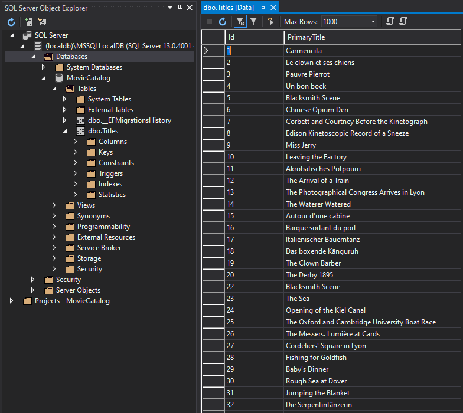

Feladat 2: Adatbetöltés¶
Az adatbetöltést az IMDb által minden nap közzétett TSV (tabulátorral elválasztott értékek) típusú fájlok alapján végezzük. A hivatalos dokumentáció ezekről a fájlokról itt található: IMDb Datasets (https://www.imdb.com/interfaces/)). Minket most a title.basics.tsv.gz fájl érdekel, ami a megfelelő adatokat tartalmazza ahhoz, hogy filmek alapadatait (cím, kiadás dátuma, műfaj) tárolhassuk.
A fájl tehát egy GZIP-pel tömörített szöveges fájl, nyersen az alábbihoz hasonló adatokat találhatunk benne (az első sor a fejlécet jelöli):
tconst titleType primaryTitle originalTitle isAdult startYear endYear runtimeMinutes genres
tt0000001 short Carmencita Carmencita 0 1894 \N 1 Documentary,Short
tt0000002 short Le clown et ses chiens Le clown et ses chiens 0 1892 \N 5 Animation,Short
tt0000003 short Pauvre Pierrot Pauvre Pierrot 0 1892 \N 4 Animation,Comedy,Romance
tt0000004 short Un bon bock Un bon bock 0 1892 \N 12 Animation,Short
tt0000005 short Blacksmith Scene Blacksmith Scene 0 1893 \N 1 Comedy,Short
tt0000006 short Chinese Opium Den Chinese Opium Den 0 1894 \N 1 Short
tt0000007 short Corbett and Courtney Before the Kinetograph Corbett and Courtney Before the Kinetograph 0 1894 \N 1 Short,Sport
tt0000008 short Edison Kinetoscopic Record of a Sneeze Edison Kinetoscopic Record of a Sneeze 0 1894 \N 1 Documentary,Short
tt0000009 short Miss Jerry Miss Jerry 0 1894 \N 40 Romance,Short
- A Data projektbe vegyük fel az alábbi osztályt, ami a TSV fájlok dekódolásában fog nekünk segíteni. A fájl tartalmát nem kell megértenünk, de az alapműködést igen, amit alább részletezve láthatunk.
using System.IO.Compression;
namespace MovieCatalog.Data
{
public class TsvParser
{
public static IEnumerable<IReadOnlyDictionary<string, string?>> ParseTsv(string filePath)
{
using var reader = new StreamReader(new GZipStream(File.OpenRead(filePath), CompressionMode.Decompress));
var headers = reader.ReadLine()?.Split('\t');
if (headers == null)
yield break;
while (reader.ReadLine() is var line && !string.IsNullOrWhiteSpace(line))
{
yield return new Dictionary<string, string?>(
line.Split('\t').Select((item, index)
=> new KeyValuePair<string, string?>(headers[index], item != @"\N" ? item : null)));
}
}
}
}
A függvényt meghívva feldolgozás kezdődik meg a filePath elérési útvonalon található TSV fájlon. Az első sor a fejléc, ez tartalmazza, hogy hány érték található minden ezt követő sorban. A \N jelölésű sorok null értéket jelölnek. Ezt követően soronként ennyi értéket találunk a TSV fájlban. A fájlból soronként olvasva visszaadunk 1-1 értéket egy szótár formájában, amiből a dokumentáció alapján definiált kulccsal kiindexelhetjük a TSV fájlban található string értékeket.
-
Vegyük fel az alábbi függvényt a
MovieCatalogDbContextosztályba:using System.Linq; using System.Threading.Tasks; // ... public async Task ImportFromFileAsync(string filePath, int? maxValues = 100_000) { var tsvQuery = TsvParser.ParseTsv(filePath) .Select(item => new Title(item["primaryTitle"] ?? throw new ArgumentNullException("Null title")) { Id = int.Parse(item["tconst"]?[2..] ?? throw new InvalidOperationException("Null id")), // A 'tconst' értéke a fájlban pl. 'tt6723592', a [..] range operátorral a 'tt'-t az elejéről levágjuk, // a maradékot pedig egész számmá alakítjuk }); int idx = 0; foreach (var item in tsvQuery) { Titles.Add(item); idx++; if (idx == maxValues) { var saved = await SaveChangesAsync(); Logger.LogInformation($"Saved {saved} rows."); idx = 0; } } var savedFinal = await SaveChangesAsync(); Logger.LogInformation($"Saved {savedFinal} rows. Total:{Titles.Count()} rows"); } -
Mivel arra készülünk, hogy a fájl és tartalma óriási is lehet, ezért 100 000-es lépésközönként szúrjuk csak be az adatbázisba az elemeket.
-
Ezért kellett, hogy ne a teljes fájlt egyszerre beolvassuk, hanem gyakorlatilag soronként streameljük a fájlból a szótárakat, azokat pedig transzformáljuk Title típusú elemekre. Ha a géped nem bírja, a maxValues értéket leveheted 10 000-re.
-
Töltsük le a gépünkre az aktuális
title.basics.tsv.gzfájl (IMDb data files available for download (https://datasets.imdbws.com/, ~124 MB!)) helyett egy jelentősen kisebb, csak az első 100 000 sort tartalmazó részletet itt (~2 MB).
using Microsoft.EntityFrameworkCore;
// ...
public async Task StartAsync(CancellationToken cancellationToken)
{
Logger.LogInformation("Starting...");
//...korábbi kódok kikommentezve...
if (!await DbContext.Titles.AnyAsync(cancellationToken))
await DbContext.ImportFromFileAsync(@"C:\------\title.basics.tsv.gz");
// Az útvonal értelemszerűen kitöltendő.
await Host.StopAsync();
}
Futtatás előtt ürítsük ki a Titles táblát!
Ezzel be is kerülnek az adatok az adatbázisba:

Feladat 2.¶
A fenti példa és a dokumentáció (https://www.imdb.com/interfaces/) alapján bővítsd a Title osztály modelljét és a betöltés során a Title objektumok előállítását az alábbi tulajdonságokkal! A tulajdonság neve C#-ban PascalCase-ben legyen, bár a szótárban camelCase-ben van.
TitleType: legyen egy saját szinténTitleTypenévre hallgató enum típus a Data projektben, aminek az értékei:Unknown,Short,Movie,TvMovie,TvSeries,TvEpisode,TvShort,TvMiniSeries,TvSpecial,TvPilot,Video,VideoGame. Az enum értéke a TSV-ben string-ként van tárolva (pl. tvShort), használd a feldolgozáshoz azEnum.Parsefüggvény megfelelő overloadját! Gyakran keresünk ez alapján, ezért indexelni kell.OriginalTitle: szöveges érték, az eredeti nyelvű címe a műnek. Kötelező mező, de nem kell indexelni.StartYear: a kiadás évszáma. Lehetnullértékű is. Számként kell tárolni. Gyakran keresünk ez alapján, ezért indexelni kell.EndYear: csak sorozatok esetén a sorozat záró részének kiadási évszáma. Lehetnullértékű is. Számként kell tárolni.RuntimeMinutes: A futási idő percben. Lehetnullis.
Természetesen szükséges új migrációt hozzáadni a projekthez és frissíteni az adatbázis sémáját. A fenti betöltés csak üres Titles tábla esetén fut le, tehát törölni kell belőle az adatokat (törölhető az adatbázis is, ekkor értelemszerűen újra létre kell hozni a betöltés előtt).
Tippek¶
-
Az enum értékek szövegből való átalakításánál nem szabad a kisbetű-nagybetű között különbséget tenni, mert a fájlban kisbetűsen szerepel (pl. short), ami az enum értékek között nagybetűsen (Short).
-
Nullozható egész szám szövegből való átalakításánál használhatjuk az engedékenyebb átalakító függvényt a
nullértékek elegánsabb kezeléséhez. -
Gyorsan kiüríthetjük a táblát a
TRUNCATE TABLE Titlesutasítással.
Beadandó¶
Ha a 3. feladattal is elkészülsz, akkor a 2. feladathoz nem kell beadni semmit.
Az adatmodell kódjáról készült képek, a betöltött adatokat reprezentáló képek (a műveket tartalmazó tábla tartalma) és az adatbázis sémáját reprezentáló képek (legyenek láthatók a tábla oszlopai, indexei, kulcsai pl. SQL Server Object Explorerben vagy SSMS-ben).
Következő feladat¶
Folytasd a következő feladattal.